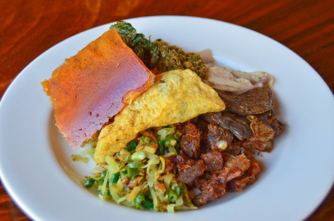
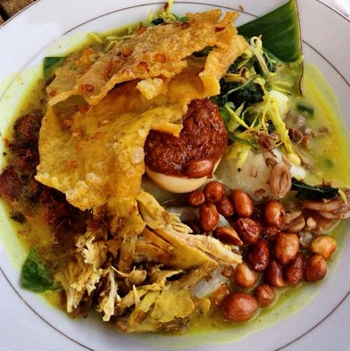
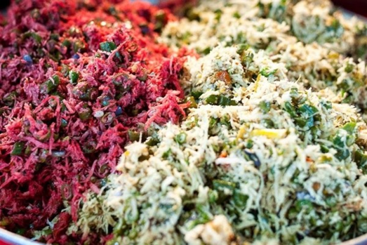
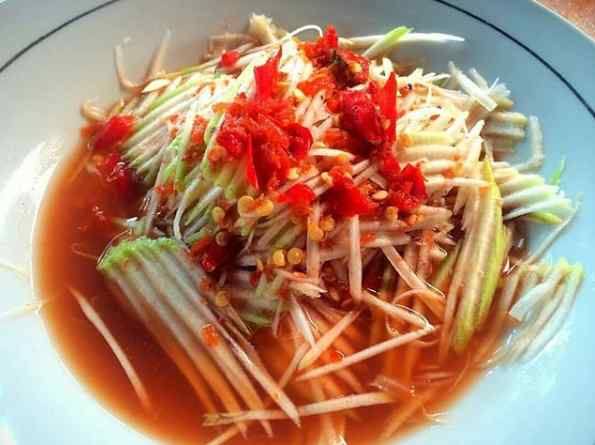

Kuliner Khas Bali

Hal lain yang biasanya identik dengan jalan-jalan adalah kuliner. Banyak orang mengatakan bahwa kurang afdol rasanya kalau jalan-jalan, tidak sambil kulineran atau menikmati makanan khas dari daerah yang dikunjungi. Salah satu kuliner yang banyak diminati adalah kuliner yang berasal dari Pulau Dewata. Yup, makanan khas Bali tidak boleh dilewatkan, apalagi jika kita sedang mengunjungi pulau tersebut.
Bali bisa dibilang tidak pernah ada matinya dalam menawarkan pesona wisata. Bagaimana tidak, pulau dewata selalu berhasil menarik perhatian wisatawan lokal maupun mancanegara. Saat berlibur ke Bali, tentu tidak boleh melewatkan makanan khasnya.
Berikut Rekomendasi Beberapa Makanan Khas Bali yang Wajib untuk dicoba :
- Ayam Betutu

Masakan khas Bali memang terkenal memiliki cita rasa yang kuat dan tajam. Salah satunya, ayam betutu yang terkenal dan bisa ditemui di beberapa kota besar di Indonesia. Selain menggunakan daging ayam,masakan dengan cita rasa kaya akan rempah ini juga biasanya menggunakan daging bebek
Ayam betutu merupakan makanan khas Gilimanuk. Ayam betutu merupakan jenis lauk pauk yang dibuat dari daging ayam yang telah dibersihkan kemudian dibalurkan bumbu khas Bali yang dikenal dengan base genep di seluruh permukaan tubuh daging ayam dan sebagian lagi dimasukkan ke dalam rongga abdomennya. Daging ayam yang telah dibumbui tersebut kemudian direbus atau langsung dibakar hingga menghasilkan aroma yang khas. Aroma khas yang muncul disebabkan karena adanya pemanasan yang menyebabkan air dan lemak daging berantai pendek ikut menguap. Semakin banyak uap yang dihasilkan, semakin kuat dan enak aromanya. Menurut tradisi Bali, ayam betutu biasanya disajikan pada saat upacara adat seperti odalan, otonan, maupun perkawinan.
Berikut Rekomendasi Ayam Betutu yang terkenal paling nikmat di Bali :
- Ayam Betutu Men Tempeh
Warung ayam betutu legendaris di Bali dan sangat terkenal adalah Ayam Betutu Men Tempeh. Tempat makan ini sudah buka sejak 1978. Lokasi Ayam Betutu Men Tempeh di Jalan Gilimanuk, Melaya, Jembrana dan buka setiap hari pukul 07.00-20.00 WITA. Ciri khas sajian ayam betutu di sini adalah kuahnya pedas dan kental. Makin lezat karena menggunakan ayam kampung muda yang direbus lama.
- Ayam Betutu Pak Sanur
Warung yang berdiri sejak tahun 1986 ini memang berlokasi sedikit tersembunyi di Jl. Arjuna No. 19 Ubud. Meskipun berada di tempat yang tersembunyi, warung ini tidak sepi pengunjung dan menu makanannya selalu ludes dalam waktu cepat. Ayam Betutu Pak Sanur buka mulai pukul 08.00 WITA. Karena warung ini termasuk warung yang sangat ramai, jangan sekali-kali datang terlalu siang karena biasanya dalam sekejap Ayam Betutunya sudah ludes.
- Ayam Betutu Pak Man
Ayam Betutu Pak Man berada di Jalan Kubu Anyar Tuban. Lokasinya dekat dengan Toko Krisna Tuban. Dari Bandara Ngurah Rai hanya sekitar 10 menit perjalanan darat. Cocok menjadi lokasi tempat makan selepas mendarat dari pesawat.
Babi Guling

Salah satu makanan khas Bali yang populer adalah babi guling. Babi guling sebagai makanan tradisional ini sudah dicatatkan sebagai warisan budaya tak benda (WBTB) Indonesia sejak tahun 2011. Pada awalnya babi guling hanya digunakan untuk sajian upacara adat atau keagamaan. Namun kini babi guling dapat ditemukan dengan mudah di berbagai rumah makan, warung, dan hotel-hotel di Bali.
Babi guling adalah sejenis makanan yang terbuat dari anak babi betina atau jantan yang perutnya diisikan dengan base genep (bumbu rangkap) yang terdiri dari : bawang merah, bawang putih, kencur, jahe, isen, kunir, cabai rawit, gula dan sayuran seperti daun ketela pohon dan lalu dipanggang sambil diputar-putar (diguling-gulingkan) sampai matang dengan ditandai dengan perubahan warna kulit menjadi kecoklatan dan renyah.
Berikut Rekomendasi Babi Guling yang terkenal paling nikmat di Bali :
- Babi Guling Pan Ana
Babi guling Pan Ana bisa dibilang sudah punya banyak penggemarnya karena memiliki rasa yang aduh nggak ada obat deh. Buka dari tahun 2018, dan beralamat di Jl. Nusa Kambangan Gg. XXXIII No.4, Dauh Puri Kauh, Denpasar City, Bali, Indonesia.
- Babi Guling Pande Egi
Warung yang berlokasi di Banjar Pande, Beng, Kec. Gianyar, Kabupaten Gianyar, Bali 80513 ini dikenal dengan olahan makanan tradisional berbahan daging babi. Sejak namanya melambung, tak pernah ada cerita sepi. Rata-rata 1.000 lebih yang datang tiap hari.
- Babi Guling Candra
Saat anda berada di kota Denpasar, maka warung makan Babi Guling Chandra Denpasar adalah tempat makan hidangan Babi Guling terdekat yang dapat anda kunjungi, jika ingin menikmati hidangan khas Bali ini.Alamat lokasi warung Babi Guling Chandra Bali terletak di Jalan Teuku Umar, Kota Denpasar, Bali.
Tipat Blayag

Sebagai tempat yang banyak dikunjungi wisatawan asing, Buleleng tak pernah kehilangan ciri khas nya. Bahkan kuliner daerahnya pun masih banyak dijajakan di kawasan wisata. Tipat Blayag yang merupakan makanan Khas salah satu Kabupaten di Bali yakni Kabupaten Buleleng ini memiliki pesona keunikan yang ramai diburu oleh para wisatawan dan sangat menarik untuk dicoba.
Sekilas kuliner ini memang mirip dengan lontong pecel atau gado-gado. Tapi Blayag Buleleng memiliki cita rasa yang berbeda karena kuliner ini tidak menggunakan bumbu kacang melainkan kuah kuning yang sering disebut kuah ayam nyat-nyat. Tipat ini dibungkus dengan gulungan janur dan disajikan dengan sayur urap, ayam sisir, sambel, kedelai goreng, keripik kulit, dan ayam bumbu kuah.
Berikut Rekomendasi Tipat Blayag yang terkenal paling nikmat di Bali :
- Tipat Blayag Bu Agus
Tempat makan ini berlokasi di Jl. Tukad Yeh Aya No. 44, Panjer, Denpasar Selatan, Dauh Puri Klod, Denpasar, Kota Denpasar, Bali 80225.
- Warung Tipat Blayag Khas Tejakula
Tempat Makan ini berlokasi di Jl. Tukad Musi No.8, Panjer, Denpasar Sel., Kota Denpasar, Bali 80234.
- Blayag buleleng
Tempat Makan ini berlokasi di Jl. Surapati No.124, Kampung Baru, Kp. Baru, Kec. Buleleng, Kabupaten Buleleng, Bali 81151.
Lawar

Lawar adalah salah satu kuliner yang sudah terkenal di Bali. Tanpa lawar, hidangan pada saat hari raya akan terasa tidak lengkap. Apa lagi saat momen Hari Raya Galungan. Lawar merupakan salah satu kuliner yang disajikan saat rahina Penampahan Galungan, di samping sebagai salah satu kelengkapan upakara.
Lawar dibuat dari daging yang dicincang, sayuran, sejumlah bumbu-bumbu dan kelapa. Terkadang di beberapa jenis lawar diberikan unsur yang dapat menambah rasa dari lawar itu yaitu darah dari daging itu sendiri. Darah tersebut dicampurkan dengan bumbu-bumbu tertentu sehingga menambah lezat lawar tersebut. Lawar sendiri tidak dapat bertahan lama makanan ini jika didiamkan di udara terbuka hanya bertahan setengah hari.
Penamaannya bervariasi, biasanya berdasarkan jenis daging yang digunakan atau jenis sayurannya. Bila yang digunakan daging babi maka lawar yang dihasilkan disebut lawar babi., demikian juga bila yang digunakan sayur nangka, maka lawarnya diberi nama lawar nangka. Ada juga pemberian namanya berdasarkan warna lawarnya yaitu lawar merah bila warna lawarnya merah, lawar putih bila warna lawarnya putih dan ada lawar yang bernama lawar padamare, yaitu sejenis lawar yang dibuat dari campuran beberapa jenis lawar.
Lawar juga bisa dibuat dengan halal sebagai alternatif bagi muslim yakni daging babi diganti dengan kulit sapi.
Berikut Rekomendasi Lawar yang terkenal paling nikmat di Bali :
- Lawar Bali Kartika
Tempat makan ini berlokasi di Jl. By Pass I. Gusti Ngurah Rai, Kesiman, Kec. Denpasar Tim., Kota Denpasar, Bali 80237.
- Lawar Nang Etong
Tempat makan ini berlokai di Jl. Pulau Batam II, Dauh Puri Kauh, Kec. Denpasar Bar., Kota Denpasar, Bali 80113.
- Lawar Ayam Artha Jaya
Tempat makan ini berlokai di Jl. Gatot Subroto Barat No.98A, Pemecutan Kaja, Kec. Denpasar Utara, Kota Denpasar, Bali 80118.
Rujak Kuah Pindang

Di Jawa Timur, Anda bisa mendapati rujak cingur. Di tanah sunda, ada pula rujak yang namanya rujak bebek. Nah, di Bali, ada rujak yang namanya rujak kuah pindang khas Bali. Penampilan dari rujak ini pun sangat jauh berbeda dibandingkan dengan rujak cingur ataupun rujak bebek. Demikian pula rasanya.
Rujak Kuah Pindang adalah salah satu jenis rujak khas dan populer di Bali. Rujak ini berisi kombinasi dari beberapa buah-buahan segar yang hampir mirip dengan rujak manis atau rujak gula.
Contoh buah yang digunakan mirip dengan rujak gula seperti mangga, bengkuang, pepaya, nanas, kedondong, mentimun, belimbing, dan lain-lain. Buah-buahan ini dikupas kemudian dipotong kecil-kecil.
Namun, yang membedakannya dengan rujak biasa adalah pelengkapnya, yakni kaldu yang terbuat dari ikan, garam, terasi, dan cabai. Semua bahan pelengkap itu digiling sampai lembut dan menjadi kaldu. Saat proses pembuatannya rujak ini, tidak diberikan air lagi karena akan dicampur kuah pindang (kaldu ikan pindang).
Berikut Rekomendasi Rujak Kuah Pindang yang terkenal paling nikmat di Bali :
- Warung Men Runtu
Sebuah warung makan yang terkenal dengan rujaknya yang super pedas dan berlokasi di Jl. Sekuta no. 32 C, Sanur, Denpasar.
- Warung Rujak Glogor
Warung makan yang terletak di Jl. Bukit Tunggal, nomor 27, Pemecutan ini sangat populer. Selain sudah ada sejak tahun 1966, rasanya juga tidak berubah. Bukan hanya warga Bali saja, ternyata kepopuleran rujak gelogor sampai di ibukota.
- Warung Rujak SODA
Warung makan ini juga cukup banyak yang mengetahui, dan berlokasi di Jl. Kertanegara No.99, Ubung Kaja, Kec. Denpasar Utara, Kota Denpasar, Bali 80115.